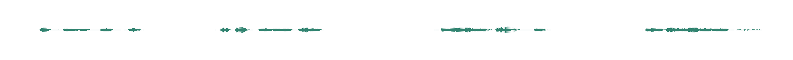

项目简介
LLVC 端侧语音转换
保留说话内容，转换声音的音色。LLVC 面向端侧低延迟处理，在本项目中与 RVC、QuickVC 两条推理链使用同一批输入对照。

llvc
流式缓存延续至下一块，默认推进 13 ms（cf=1），并支持按倍数扩展块长（如 cf=4，52 ms）权衡吞吐与时延。生成器内部完成编码与解码。
cmodel0 · fmodel0 · vcmodel1 / 2 / 3llvc/rvc
无 F0 权重直接使用内容特征。带 F0 权重还接收 RMVPE 提取并移调后的音高。流式新增窗口 100 ms。
cmodel1 · fmodel0 + vcmodel4 或 fmodel1 + vcmodel5–10llvc/quickvc
使用全零 Mel 音色条件，无独立音高提取器。流式新增窗口 100 ms。
cmodel2 · fmodel0 · vcmodel11项目简介
模型编号与权重
一个配置由内容特征、F0 提取和转换权重三个位置组成。输出音轨用 vcmodel 标识具体音色权重。
内容特征 · cmodel
cmodel0 无独立模型cmodel1 ContentVec · checkpoint_best_legacy_500.ptcmodel2 HuBERT-soft · hubert-soft-35d9f29f.pt
音高提取 · fmodel
fmodel0 无独立 F0 模型fmodel1 RMVPE · rmvpe.pt
白菜357k 在两批试听中均未能加载，表中保留它的配置编号。RVC 的目标性别来自音色配置；LLVC 与 QuickVC 的批次未指定目标性别。
CPU 性能 · 跨线程总览
流式与非流式吞吐（12 线程 vs 2 线程）
RTF 为累计处理耗时除以累计有效输入时长，越小越快（绿色表示快于实时 < 1，橙色表示慢于实时 >= 1）。下方可切换 2 线程受限基准、12 线程默认基准，以及跨线程全景对照。
CPU 性能 · LLVC 专题
放大块长（13 ms → 52 ms）如何撬动流式余量？
不改动网络权重、不重训、不改变流式缓存范式，仅将 chunk_factor 从 1（13 ms）调至 4（52 ms），每次把 4 个 13 帧局部因果窗口打包计算。在仅用 2 线程的受限条件下，三款 LLVC 流式 RTF 降至 0.270–0.424，反超此前 12 线程 cf=1（0.579–0.948）。
流式 / 非流式倍差大幅收敛
12 线程 cf=1 下流式是非流式的 13.3–18.4 倍；2 线程 cf=4 下收敛至 2.55–2.75 倍，单块计算余量达 30.0–38.0 ms，可作为 Python 与后续手机端 C/C++ 的统一基准块长。
数据可比性与波动说明
v0.2.2 为 LLVC 引入了评估期无损推理缓存（与原版波形误差 ≤ 2.38e-7）。本轮 23:00 时段 llvc 非流式（0.165）略慢于同构的 llvc-hfg（0.108），属系统运行波动，不据此对同构权重排名。
表中条形按 RTF = 1.2 缩放以突出实时阈值（1.0）附近的余量差异；完成即发送 = 块时长 + 均块耗时，不含算法前瞻对齐与播放缓冲。
CPU 性能 · 算力边界
收紧到 2 线程后，谁还跟得上实时输入？
模拟手机端仅分配 2 个大核的受限 CPU 条件：每块平均耗时低于新增块时长才能避免持续积压。下表与卡片合并展示 12 线程与 2 线程下的实时边界变化。
llvc
cf=4 均块 14.0–22.0 ms（预算 52 ms）cf=1（13 ms）在 2 线程下处于临界（11.2–14.0 ms，HFG 略积压）；改用 cf=4（52 ms）后三款变体全部充裕实时，完成即发送参考 66.0–74.0 ms，远低于 100 ms 窗口的对比模型。
llvc/quickvc
非流式对多核最敏感（RTF 从 0.128 升至 0.520，4.07×）；流式在 2 线程下超过 100 ms 预算，无法稳定跟上实时输入。
llvc/rvc
稳态音色（guanguanV1 / zhanzhanv2-xi）在 12 线程与 2 线程下均约 306–320 ms，说明流式链早已串行受限；2 线程下部分配置即便非流式也接近或超过 1.0（0.889–1.316）。
数据汇总自 6 个实测批次（43 组配置、258 个已核验 WAV）。所有非流式及 LLVC 流式有效时长 382.189 s；RVC/QuickVC 流式舍去末尾不足整块部分，有效时长 381.900 s。调度参考不等于实测听感端到端延迟。